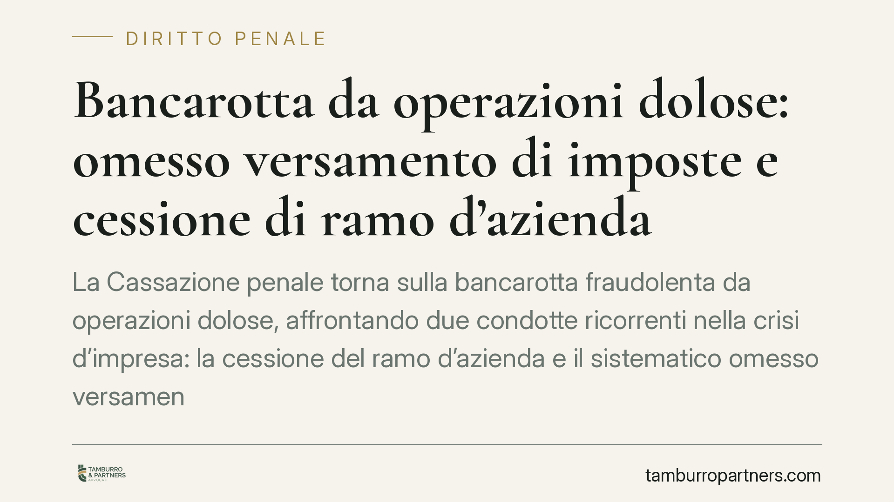

Bancarotta da operazioni dolose: omesso versamento di imposte e cessione di ramo d'azienda
La Cassazione penale torna sulla bancarotta fraudolenta da operazioni dolose, affrontando due condotte ricorrenti nella crisi d'impresa: la cessione del ramo d'azienda e il sistematico omesso versamento di imposte e contributi. La pronuncia ribadisce che un'operazione lecita sul piano civilistico può integrare reato quando aggrava il dissesto. Un tema che riguarda ogni amministratore in difficoltà finanziaria.

Il caso e l'orientamento di riferimento
La questione affrontata appartiene a un filone consolidato della giurisprudenza di legittimità in materia di bancarotta impropria. Il nodo è sempre lo stesso: a quali condizioni l'omesso versamento protratto di tributi e contributi previdenziali, unito a operazioni di riorganizzazione aziendale come la cessione di un ramo d'azienda, fa scattare la responsabilità penale dell'amministratore.
Avvertenza metodologica: in assenza di estremi editoriali completi e verificabili della singola decisione, trattiamo il tema come analisi dell'orientamento di legittimità, senza attribuire affermazioni specifiche a una pronuncia non puntualmente identificata. L'impostazione resta però pienamente operativa per chi gestisce un'impresa in tensione finanziaria.
Inquadramento normativo
La fattispecie è disciplinata dall'art. 223, comma 2, n. 2 della legge fallimentare (R.D. 267/1942), che punisce gli amministratori i quali abbiano cagionato o concorso a cagionare il dissesto della società mediante operazioni dolose. Si tratta di una forma di bancarotta fraudolenta impropria: non richiede un atto distrattivo diretto, ma un comportamento che provoca o aggrava lo stato di insolvenza.
Nel Codice della crisi d'impresa e dell'insolvenza (D.Lgs. 14/2019) la materia è trasposta nell'art. 329, che riproduce in sostanza l'impianto dell'art. 223 l.f. per i fatti commessi da soggetti diversi dall'imprenditore individuale. La corrispondenza con la figura delle «operazioni dolose» va letta in via funzionale: il contenuto precettivo resta analogo, pur mutando la collocazione sistematica. Dove permane incertezza sul richiamo numerico puntuale, è prudente verificare il testo vigente prima di ogni atto difensivo.
Operazione lecita, rilievo penale
Il punto centrale è la distinzione tra liceità civilistica e rilevanza penale. Cedere un ramo d'azienda è operazione del tutto legittima nel diritto commerciale. Non versare le imposte, di per sé, integra al più illeciti tributari.
Il salto di qualità avviene quando questi atti, isolatamente neutri, si inseriscono in una strategia che drena risorse e aggrava consapevolmente il dissesto. L'omesso versamento diventa «operazione dolosa» non per il mancato pagamento in sé, ma perché l'amministratore sceglie di finanziare l'attività con i soldi del Fisco e degli enti previdenziali, scaricando sulla massa dei creditori il costo di quella scelta.
Nesso causale e criterio della sistematicità
La giurisprudenza richiede un nesso causale tra la condotta e il dissesto. Qui entra in gioco il criterio della sistematicità: un singolo mancato versamento difficilmente integra l'operazione dolosa; una condotta reiterata e consapevole, protratta nel tempo come modalità ordinaria di gestione, sì.
È la continuità a rivelare il dolo. L'amministratore che, per anni, omette versamenti IVA e contributi mentre prosegue l'attività e dispone operazioni straordinarie dimostra di aver accettato l'aggravamento dell'insolvenza come prezzo della sopravvivenza dell'impresa.
Il coordinamento con i reati tributari
Le stesse condotte rilevano anche sul piano tributario. L'art. 10-ter del D.Lgs. 74/2000 punisce l'omesso versamento dell'IVA dovuta in base alla dichiarazione, oltre la soglia di punibilità prevista dalla norma; l'art. 10-bis riguarda l'omesso versamento di ritenute certificate o risultanti dalla dichiarazione del sostituto. Le soglie vanno verificate nel testo vigente, perché più volte modificate.
Si tratta di piani distinti. La regolarizzazione fiscale — ad esempio tramite ravvedimento o piano di rateizzazione — può incidere sulla punibilità tributaria, ma non neutralizza automaticamente il profilo fallimentare. Il reato di bancarotta tutela i creditori nel loro complesso: sanare il debito col Fisco non cancella l'aggravamento del dissesto già prodotto.
Cosa cambia per l'amministratore
Per chi guida un'impresa in difficoltà, il messaggio è netto. Continuare a operare omettendo i versamenti erariali e contributivi non è una zona grigia: è una scelta gestionale che, se protratta, può fondare un'accusa penale in caso di successivo fallimento.
Cosa fare in concreto
- Monitorate l'equilibrio finanziario in tempo reale: documentate le decisioni gestionali quando emergono segnali di crisi, così da ricostruire le ragioni delle scelte.
- Non trattate il debito fiscale come linea di credito: l'omesso versamento sistematico è l'indicatore più frequente dell'operazione dolosa.
- Valutate per tempo gli strumenti di regolazione della crisi: composizione negoziata e procedure del Codice della crisi vanno attivate prima che il dissesto diventi irreversibile.
- Verificate ogni operazione straordinaria sotto il profilo penale: cessioni di rami d'azienda e riorganizzazioni vanno accompagnate da valutazioni sull'impatto sui creditori.
- Distinguete i due fronti: affrontate il profilo tributario e quello fallimentare con strategie coordinate ma autonome, senza confidare che la sanatoria fiscale copra il rischio penale.
Disclaimer
Contributo informativo a cura di Tamburro & Partners Avvocati – Avv. Giuseppe Tamburro. Non costituisce parere legale.
Ogni condominio ha una storia a sé.
Se gestisci un'amministrazione e vuoi un confronto su una specifica questione condominiale, scrivi allo studio. Ti rispondiamo entro un giorno lavorativo.